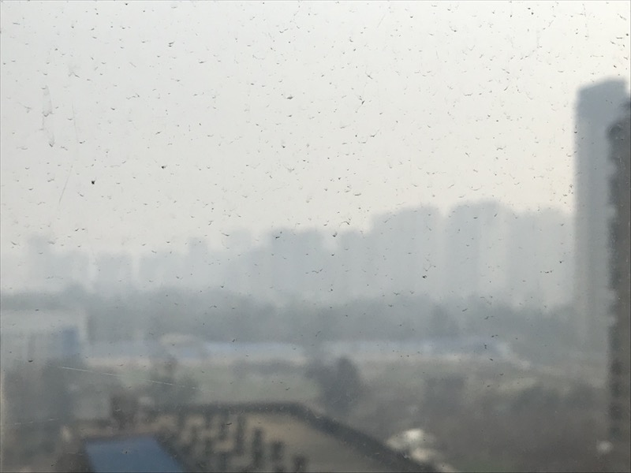
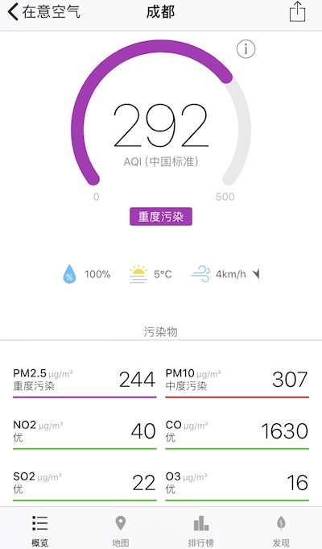
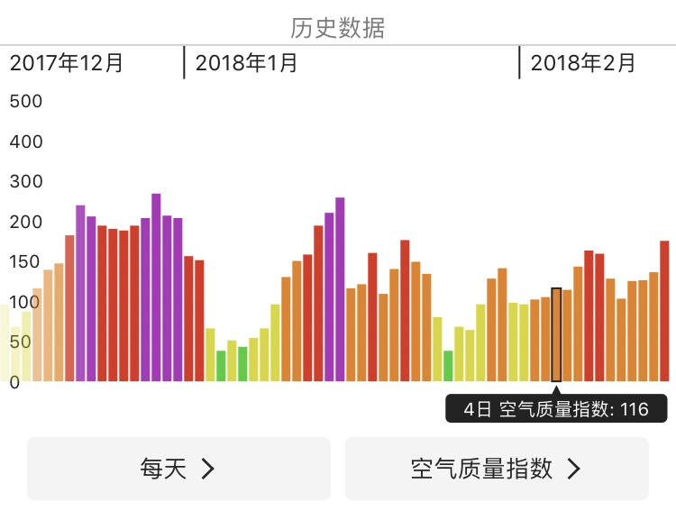

大年初一，本来不想写东西的。可是一大早起来，就看到这样的天空，空气质量是“重度污染”。连大年初一都不放过我，出不了门，所以我这个年也不想过了，决定写点什么，在我被这雾霾灭口之前 :)


三个月以来，成都的天空一直是这个样子，每一天都像是世界末日。别搞错了，这不是普通的四川盆地的雾气，而是严重污染的雾霾。成都的这三个月，几乎每一天都是雾霾天。查看空气质量历史数据，发现成都就没几天空气是优良的，这比北京上海都要差很多。

我的博客已经消失一段时间了，好些人在问我，到底发生了什么，我都没有回答他们。导致我关闭博客的，不仅是因为这严重的，长期的，末日般的雾霾天，而且是因为像这雾霾一样阴暗的人心。实际上正因为人心的阴暗和贪婪，才会制造出如此严重的雾霾。
面对这样的人群，我不仅恍然大悟，我一直以来在给什么样的人提供几乎无偿的信息？我为什么要写那些文章？我为此浪费了多少宝贵的时间！我本可以用它来休息，为自己多做一点，为我爱的人多做一点……
经过几个月来在国内的感受，我就像回到了出国以前。我彻底的回忆起了自己为什么要离开成都去北京，又为什么离开北京去美国…… 当我回来看的时候，人们确实变富裕了，然而人心却没有变得更善良，更有教养，反而文明程度和素质降低了。
“在成都的街头走一走……”，然后你就被边走边抽烟的人给熏到了，一路走一路熏，你才意识到香烟的杀伤范围有那么大。走在人行道上，背后飞来个电动车，嫌你挡路呢，朝你狂按喇叭，你一路走他一路按，仿佛人行道本来是该他走的，而不是给行人走的。走出商场，前面那个大汉一把捞起厚重的保暖门帘，明明看见你在后面一步之遥，不但不扶一下，反而故意把它甩起来老高，让它朝你砸下来，然后你就看到他在门口抽起烟来。在星巴克买咖啡，经常有人插队，那方式手法之巧妙，叹为观止。想坐下发会呆，旁边来一个大汉，醉了似的轰一声倒下去，然后一边看手机一边使劲拍桌子。回家想歇会，楼上的邻居开始把桌子凳子拖得鸡皮疙瘩式的响，一响就是几个小时，他们自己却也受得了。本来你心想这小区环境如此好，车库里都是奥迪宝马奔驰，人应该照应点吧，结果……
如此各种奇葩现象，这似乎已不是我认识的那个成都，但它也许就是那个成都。每一次的经历你都可以说是个别现象。可是当你几乎每一次出门都遇到“个别现象”，就可以根据概率论，总结出一些规律来了。有些地方人的平均素质，确实比其他地方要低。
我曾经以为那些打着“硅谷大牛”牌子，回国招摇撞骗的人只是少数。我写过『对中国人的信心』，说大部分中国人都是好的。我曾经以为写点文章就能改善中国人的社会意识。可是面对活生生的中国人，我醒悟了。招摇撞骗的人不是少数，而是大多数！在中国，几乎每个知名人士都有自己的一套骗术，所以我根本不看他们说什么。名气对于他们是很重要的，对于我却是一种累赘。
这里暴露一个秘密，写『对中国人的信心』的时候，我压根就没对中国人存在过信心 :P 那些与国人美好的遭遇，都是大幅度美化过，PS 过的…… 虽然在每个地方我都会遇到少数几个可爱的人，然而对于大部分人，我为他们编造了一个美丽的谎言。这是我为数不多的谎言之一。
在美国的大部分时候，我对于国人的态度一般是：躲得远远的。在学校里的时候，我有过三个中国室友。我的经验是，跟中国人一起住，麻烦就来了。因为他们很多脏乱吵，势利，吝啬，分不清私人界限。连什么是自己的事情，什么是别人的事情都分不清楚。直到最后遇到一个台湾室友，情况才好了很多。他高尚的品德和对理想的追求感化了我，直到今天我都自愧不如。我因此很喜欢台湾人，而事实证明他们大部分都很好。
本来就没考虑在成都安家工作，只是想在一个号称“休闲城市”待会儿，思索下人生。没想到却因为这连天的雾霾和奇葩的人群，成天只有待在自己的小窝里。有时候戴上口罩出门逛逛，咖啡店坐坐，可几乎每次都会遭遇坏心情的野蛮人，所以已经不愿意出去了。当然也会遇到会心的微笑和感动的瞬间，然而这些很快又被突如其来的奇葩现象给消磨掉了。
这个反对膜拜权威的人，他不但外面没有地方可待，而且他的后院也着了火，他的家已经被国内的各种媒体，吹牛大王们攻陷。眼看着自己的亲人成天抱着手机被那些人洗脑，亲自在场都无能为力，还被唠叨和转发各种微信小广告，你还指望写文章就可以改善社会？我醒悟了，美好的动机，它失败得如此彻底，因为我根本不懂得如何利用中国人的心：盲从，攀比，自私，贪小便宜，势利，唯利是图，脏，乱，吵，不讲礼仪，不尊重私人界限……
这就是所谓五千年的传统文化。一种只有物质和功利，而没有爱的文化。我耗费了十年的人生，跨越了半个地球，经历了种种，才把这些垃圾从我自己的脑子里除去。又如何指望写点文章就让其他人见效呢？十年树木，百年树人，真不是说点话写点文章就可以的，何况别人根本就不看你不听你的。
这就是为什么我不应该再写博客和文章。它们也许对少数人有帮助，然而对于大面积的社会，对我自己，其实一点用都没有，徒增烦恼而已。不如把时间花来睡大觉。
春节，恰恰是这一切的攀比，八卦，势利现象集中爆发的时候。阖家团聚，对于大部分中国人家庭其实都毫无意义，因为他们的心不在一起，没有真正的爱和尊重，只有春晚不断地煽情打鸡血。
所以从今年开始，我不再过春节，也不再写博客。我不再想给任何人无偿提供信息，也不再提供有偿的咨询。我将停止在中国的一切创业和商业活动，专心做自己的研究和休闲（换个地方）。我很清楚自己学识的地位和价值，我不会再以任何价格把它卖给非文明世界的人。在这个野蛮的世界，我必须实行应付野蛮世界的策略。